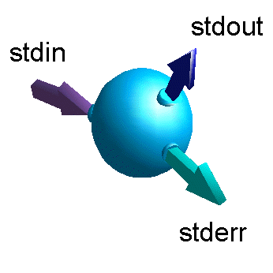
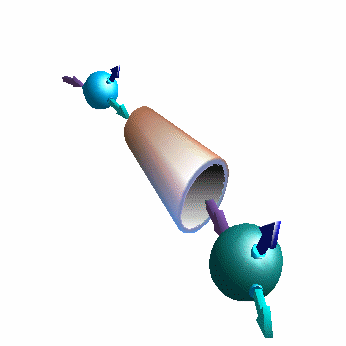

Entendemos por comunicación con el ambiente todas aquellas formas posibles de intercambiar datos entre el programa y el entorno, ya sea el sistema operativo, el shell del usuario u otro programa que lo haya lanzado. Una necesidad evidente de comunicación será recibir parámetros, argumentos u opciones de trabajo. Otras necesidades serán generar archivos con resultados, o comunicar una condición de error a la entidad que puso en marcha el programa.
Esta forma de comunicación en realidad no es específica del C sino que está implementada (hoy, en prácticamente todos los sistemas operativos) por el shell de usuario. Todos los programas en ejecución (o procesos) nacen con tres canales de comunicación abiertos: entrada standard, salida standard y salida standard de errores. Cuando el shell lanza un programa, por default le conecta estos tres canales con los dispositivos lógicos teclado, pantalla y pantalla respectivamente. El resultado es que el programa puede recibir caracteres por teclado e imprimir cadenas por pantalla haciendo uso de las funciones de entrada/salida corrientes.
Ahora bien, si el usuario indica al shell, en el momento de lanzar el programa, que desea reconectar alguno de estos canales con otros dispositivos lógicos o archivos, tenemos un fenómeno de redirección, que permite que el programa, sin cambio alguno, utilice las mismas funciones de entrada/salida para leer y generar archivos o comunicarse con dispositivos diferentes.
|
Los procesos reciben tres canales de comunicación abiertos por donde relacionarse con el ambiente. Mediante redirección se pueden crear archivos con el producto de su salida, o alimentarlos con el contenido de archivos preexistentes. |
 |
Otra alternativa es el piping, o entubamiento, que permite, con un solo comando de shell, el lanzamiento (en forma concurrente, si lo soporta el sistema operativo) de dos o más procesos con sus entradas y salidas interconectadas para funcionar acopladas. El shell se apoya en el sistema operativo para construir un pipe, o tubería temporaria, para conducir el flujo de datos entre los procesos que se comunican.
El C adhiere a las convenciones de redirección y piping permitiendo manejar separadamente estos canales con sus funciones de biblioteca standard. Poder realizar piping entre procesos permite separar arquitecturalmente las funciones de un programa muy complejo, facilitando el desarrollo, aumentando la mantenibilidad y fomentando la reutilización de los programas escritos sin costo adicional de diseño o programación.
|
 |
Los procesos pueden comunicarse a través de pipes o tuberías. El sistema operativo UNIX hace uso extensivo de esta capacidad proveyendo una gran cantidad de comandos sencillos que, combinados mediante piping, permiten crear poderosas herramientas sin necesidad de programación. |
Para poder aprovechar estas capacidades solamente se requiere un protocolo común entre los programas que se comunicarán. Un medio para lograrlo, en aquellos programas que no son naturalmente cooperativos, es a veces construir adaptadores a nivel de shell. Estos son scripts generalmente sencillos que transforman un formato de datos en otro, facilitando la flexibilidad que no da el C por tratarse de un lenguaje compilado.
Los scripts, siendo interpretados, pueden ejecutarse directamente sin compilación. Pueden modificarse y probarse más rápidamente que los programas compilables, y la programación suele ser más flexible y poderosa. El costo asociado con el scripting es una menor velocidad de ejecución, lo que propone un estudio de cada caso, para optar entre scripting o programación ad hoc.
Ambientes como el moderno UNIX ofrecen numerosas herramientas y varios intérpretes de lenguajes de scripting, cada cual con mayores ventajas en un área determinada. Herramientas que es útil conocer son grep, sed, diff, comm, etc. El shell de usuario es normalmente una buena elección para scripting de tareas simples, poseyendo un lenguaje completo con manejo de variables, estructuras de control, arreglos, etc. Sin embargo, otros como awk, Perl o Python tienen mejores capacidades de manejo de cadenas, esencial para el trabajo que describimos, además de una sintaxis sumamente sintética y poderosa.
El shell, responsable de recibir las órdenes del usuario para lanzar nuevos procesos, mantiene áreas de memoria reservadas para variables de ambiente que son accesibles a los nuevos procesos. Estas variables son simplemente pares (nombre, valor) de cadenas asociadas. Las variables de ambiente se pueden establecer y consultar con comandos de shell, desde la línea de comandos o desde un script; y lo mismo con funciones de biblioteca standard C desde un programa compilado. Los programas pueden consultar una variable de ambiente y decidir el curso de ejecución en función de su contenido; y pueden establecer sus valores para los procesos hijos que originen. Las variables de ambiente son una forma flexible de configurar el comportamiento de los programas.
Las funciones de manejo de variables de ambiente son putenv() y getenv() (POSIX). Ver también setenv() y unsetenv() (BSD 4.3).
Estos comandos a nivel de shell colocan una variable y su valor en el ambiente. El comando export la hace visible a los procesos hijos.
$ DIR=/usr/local/programa
$ export DIR
Para leer la variable desde un programa C:
char directorio[50];
strcpy(directorio, getenv("DIR"));
Un programa puede recibir argumentos al momento de ejecución, dados en la línea de comandos. El protocolo para recibir argumentos se ha diseñado para ser lo más general posible. Cada argumento en la línea de comandos es una cadena, independientemente del tipo de los datos, y se accede desde el programa como un puntero a carácter. Es responsabilidad del programa hacer las conversiones a los tipos esperados.
Los argumentos son recibidos por main() con las siguientes convenciones:
main() espera dos parámetros, un entero y un arreglo de punteros a carácter.
El primer parámetro representa la cantidad total de argumentos en la línea de comandos, incluido el nombre del programa.
Los elementos del segundo parámetro son punteros a cadenas, terminadas en '\0', representando cada argumento recibido (incluyendo el nombre del programa).
main(int argc, char *argv[])
{
if(argc != 3)
printf("Debe dar nombre y edad del usuario\n");
else
printf("Nombre: %s Edad: %d\n", argv[1], atoi(argv[2]));
}
Este programa se invocaría como:
$ programa Alicia 26
Nombre: Alicia Edad: 26
Cada programa ha sido lanzado por algún otro, por lo común el shell del usuario. El programa puede seguir diferentes caminos de ejecución, encontrar errores, condiciones en las cuales es imposible proseguir, etc. Al momento de finalización del programa, puede ser interesante que el programa que le dio origen recoja alguna indicación de este estado final. El C tiene la capacidad (porque la tiene el sistema operativo) de devolver un entero, cuyo significado queda completamente librado al programador. El programa originador debe interpretar este código de retorno, que es una convención entre ambos programas. Es costumbre, aunque para nada obligatoria, devolver un 0 en caso de terminación exitosa, y números diferentes de cero para diferentes casos de terminación con error, al estilo de los protocolos de las funciones de biblioteca standard.
Esta característica es especialmente útil en el contexto de un script donde necesitamos determinar si se debe proseguir la ejecución en base al estado retornado por un programa invocado.
La función para terminar el programa devolviendo una señal de estado es exit(). Si no se dan argumentos, el valor devuelto queda indefinido.
main(int argc, char *argv[])
{
if(argc < 3) {
printf("Insuficientes argumentos\n");
exit(1);
}
procesar(argv[1],argv[2]);
exit(0);
}
Es muy común encontrar comandos del sistema operativo que aceptan un conjunto, a veces muy vasto, de opciones. Las opciones, si están presentes, se reconocen por comenzar con guiones, y deben ser los primeros argumentos dados al programa.
La convención usual en UNIX de expresar las opciones con un signo guión y letras, y opcionalmente argumentos numéricos, ha llevado a definir funciones de biblioteca standard para manejar conjuntos de opciones.
#include <getopt.h>
#include <unistd.h>
extern char *optarg;
extern int optind, opterr, optopt;
int debug;
main(int argc, char *argv[])
{
char *optstring="RrTtV:v:";
int c;
opterr=0;
while((c=getopt(argc, argv, optstring)) != EOF)
switch(c) {
case 'v':
case 'V':
debug=atoi(optarg);
printf("Nivel de debugging: %d\n",debug);
break;
case ':':
printf("Falta valor numerico\n");
exit(1);
break;
case 'R':
case 'r':
printf("Recibiendo\n");
recibir(argv[optind]);
break;
case 'T':
case 't':
printf("Transmitiendo\n");
transmitir(argv[optind]);
break;
case '?':
printf("Mal argumento\n");
break;
}
}
El programa podría usarse tanto para transmitir como para recibir archivos observando un nivel de salida de debugging conveniente. Podría invocarse como:
$ transferir -v 2 -T archivo.txt
La función getopt() es quien va recogiendo las opciones vistas en la línea de comandos y devolviéndolas como caracteres separados. La variable string optstring contiene las opciones válidas. Para aquellas opciones (como V en el ejemplo) que pueden asumir un modificador numérico, se ubica un símbolo "dos puntos" a continuación en el string optstring. El valor para la opción numérica se recibe en la variable optarg.
Si ocurre un error sintáctico en el procesamiento de las opciones, la rutina devuelve el carácter '?' y emite un mensaje de error por salida de errores standard. Si no se desea emitir este mensaje, se hace opterr=0.
Las funciones recibir() y transmitir() obtienen el
nombre del archivo del arreglo de argumentos argv[], indexándolo
con la variable optind, que queda apuntando al siguiente
elemento en la línea de comandos.
1. Escribir un programa que imprima una secuencia de números consecutivos donde el valor inicial, el valor final y el incremento son dados como argumentos.
2. Mismo ejercicio pero donde los parámetros son pasados como variables de ambiente.
3. Mismo ejercicio pero donde los parámetros son pasados como opciones.
4. Programar una calculadora capaz de resolver cálculos simples como los siguientes:
$ casio 3 + 5
8
$ casio 20 * 6
120
$ casio 5 / 3
1
5. Agregar la capacidad de fijar precisión (cantidad de decimales) como una opción:
$ casio -d2 5 / 3
1.66
6. Manteniendo la capacidad anterior, agregar la posibilidad de leer una variable de ambiente que establezca la precisión default. Si no se da la precisión como opción, se tomará la establecida por la variable de ambiente, pero si se la especifica, ésta será la adoptada. Si no hay definida una precisión se tomará 0. Ejemplo:
$ casio 10 / 7
1
$ PRECISION_CASIO=5
$ export PRECISION_CASIO
$ casio 10 / 7
1.42857
$ casio -d2 10 / 7
1.42
Ejercicios Adicionales
Ejercicios Avanzados